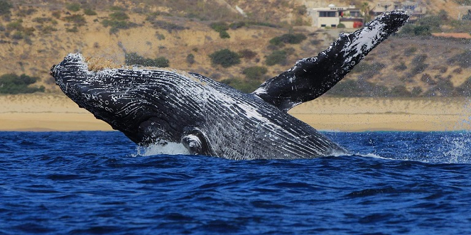

Las Ballenas
Dentro de el orden de los cetáceos y concretamente del de los cetaceos misticetos se encuentran las ballenas, las cuales conforman la familia de los balaénidos o de las ballenas barbadas.
Estas están clasificados en tan solo cuatro especies divididas en dos géneros:
- Balaena
- Eubalaena.

¿Que las diferencia de los peces?
Estos mamíferos, a diferencia de los peces, tienen la cola dispuesta en horizontal, lo que les facilita la ascensión a la superficie, donde deben subir para respirar. Pueden permanecer bajo el agua aproximadamente una hora.
¿Cuales son las especies de ballenas mas conocidas?
- Ballena azul (Balaenoptera musculus)
- Ballena jorobada (Megaptera novaeangliae)
- Ballena franca (Eubalaena spp.)
- Ballena gris (Eschrichtius robustus)